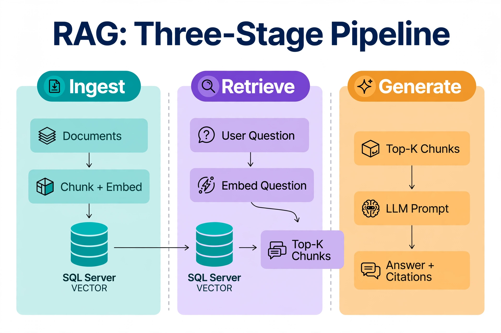

Chapter 21: What is RAG and Why It Needs a Vector Database
21.1 The Problem RAG Solves
Large language models are trained on data that ends at a fixed point in time, and they have no access to your organization's private documents, your product catalog, or last week's incident reports. Ask a model about your company's refund policy and it will either refuse, answer from stale public knowledge, or — most dangerously — invent a confident-sounding policy that does not exist. This is the grounding problem: LLMs generate fluent text, but fluency is not knowledge.
Retrieval-Augmented Generation (RAG) solves it with an architectural trick rather than a bigger model. Instead of asking the model to remember your data, you retrieve the relevant documents at query time and hand them to the model as context: "Here are the three most relevant passages from our knowledge base. Answer the user's question using only these." The model stops inventing and starts summarizing. Accuracy on domain-specific questions jumps from unreliable to production-grade, answers become citable (you can show which documents were used), and updating knowledge means updating rows in a table — not retraining a model.
The retrieval step is where the vector database earns its place. Keyword search retrieves documents that share vocabulary with the question; a vector index retrieves documents that share meaning with it. For a support chatbot, a runbook search, or a code assistant, meaning is what you need.
---
21.2 RAG Architecture: The Three-Stage Pipeline
Every production RAG system has the same three stages, and as a DBA you will own most of the first two:

The Ingest stage (teal) turns Documents into chunks and embeddings stored in SQL Server VECTOR. The Retrieve stage (purple) embeds the User Question and searches that same VECTOR store for Top-K Chunks — note the arrow crossing from ingest to retrieve: retrieval only works because both sides share one embedding space. The Generate stage (amber) stuffs the chunks into an LLM Prompt and returns an Answer + Citations. When RAG answers go wrong, the diagram tells you where to look: stale chunks (ingest), bad matches (retrieve), or ignored context (generate).
Notice the asymmetry: Stage 1 runs in batch or trickle-feed and can tolerate minutes of latency; Stage 2 runs per user question and must answer in tens of milliseconds. The database design in this book — chunk tables, vector indexes, hybrid fusion queries — is all about making Stage 2 fast and correct while keeping Stage 1 operable.
---
21.3 Embeddings: The Translation Layer Between Text and Geometry
An embedding model translates text into a point in high-dimensional space such that texts with similar meaning land near each other. "How do I reset my password?" and "I forgot my login credentials" produce vectors with small cosine distance despite sharing almost no words. The model is the translation layer; the vector column is where the translation is stored; the index is how you search the translations.
A hard rule with embeddings: the model used during ingestion and the model used at query time must be identical. Querying a SQL Server vector column populated with OpenAI text-embedding-3-small vectors using Cohere embeddings produces meaningless results. This is the vector-database equivalent of a character encoding mismatch — the numbers exist but represent different things. Store the model name and version alongside every vector (a column, not a comment), and treat model upgrades as full re-ingestion events (Chapter 23 covers the migration pattern).
The dimension must also match the column: a VECTOR(1536) column rejects 1024-dimension vectors at write time. That strictness is a feature — it turns a silent quality corruption into a loud, catchable error.
---
21.4 Vector Search Mechanics and Why It Beats Full-Text for Retrieval
Full-text search in SQL Server (CONTAINS, FREETEXTTABLE) is excellent at what it does — stemming, ranking by term frequency, phrase proximity — but it cannot close the semantic gap. A vector query retrieves chunks by geometric proximity in embedding space, which encodes meaning rather than vocabulary. Documents with similar meaning cluster together regardless of their exact words.
In SQL Server, you express the similarity ranking with VECTOR_DISTANCE:
-- SQL Server 2025: RAG retrieval query (exact search path)
DECLARE @q VECTOR(1536) = '[0.12, 0.87, ...]'; -- embedded user question
SELECT TOP (5)
ChunkId, DocTitle, ChunkText,
VECTOR_DISTANCE('cosine', Embedding, @q) AS Distance
FROM dbo.RagChunks
WHERE Embedding IS NOT NULL
ORDER BY Distance;
-- Feed ChunkText of the TOP 5 rows to the LLM as contextVECTOR_DISTANCE returns distance, so ORDER BY ascending returns the most similar chunks first. For production RAG at scale, the same logic runs through the DiskANN index via VECTOR_SEARCH (Chapter 2), and the hybrid fusion with full-text from Chapter 11 catches the exact-term cases — error numbers, SKUs, proper nouns — where pure semantic search is sloppy.
The practical scaling guidance: for RAG corpora under ~1 million chunks, exact search or a modest DiskANN index on SQL Server handles retrieval with room to spare. Beyond ~10 million chunks with aggressive latency SLAs, evaluate the dedicated engines (Chapters 15–19) — but keep the chunk store and the retrieval procedure in the same shape, so a migration changes the access path, not the architecture.
---
21.5 Building a Production RAG Pipeline on SQL Server
Here is a minimal but complete RAG pipeline: OpenAI embeddings, SQL Server storage, and a retrieval function you can call from any application. The ingest side chunks documents, embeds them, and upserts with MERGE so re-runs are idempotent; the query side embeds the question and retrieves the top chunks for the LLM prompt.
# Python — minimal RAG pipeline on SQL Server
# Requirements: openai, pyodbc, tiktoken
import openai, pyodbc, tiktoken
openai_client = openai.OpenAI()
conn = pyodbc.connect(
"DRIVER={ODBC Driver 18 for SQL Server};SERVER=localhost;"
"DATABASE=ragdb;Trusted_Connection=yes;Encrypt=yes;"
"TrustServerCertificate=yes"
)
SCHEMA = """
CREATE TABLE dbo.RagChunks (
ChunkId BIGINT IDENTITY(1,1) NOT NULL CONSTRAINT PK_RagChunks PRIMARY KEY,
DocId NVARCHAR(100) NOT NULL,
DocTitle NVARCHAR(300) NULL,
ChunkIndex INT NOT NULL,
ChunkText NVARCHAR(MAX) NOT NULL,
Embedding VECTOR(1536) NOT NULL,
ModelName NVARCHAR(100) NOT NULL CONSTRAINT DF_RagChunks_Model
DEFAULT ('text-embedding-3-small'),
UpdatedAt DATETIME2(0) NOT NULL CONSTRAINT DF_RagChunks_Updated
DEFAULT SYSUTCDATETIME(),
CONSTRAINT UQ_RagChunks_Doc_Chunk UNIQUE (DocId, ChunkIndex)
);
CREATE VECTOR INDEX IX_RagChunks_Embedding
ON dbo.RagChunks (Embedding)
WITH (METRIC = 'cosine', TYPE = 'DiskANN', MAXDOP = 4);
"""
def vec_lit(emb): return "[" + ",".join(str(v) for v in emb) + "]"
def ingest_document(doc_id, title, text, model="text-embedding-3-small"):
enc = tiktoken.encoding_for_model(model)
tokens, chunks, i = enc.encode(text), [], 0
while i < len(tokens): # 512-token chunks, 50 overlap
chunks.append(enc.decode(tokens[i:i + 512])); i += 462
embs = [e.embedding for e in
openai_client.embeddings.create(input=chunks, model=model).data]
cur = conn.cursor()
for idx, (chunk, emb) in enumerate(zip(chunks, embs)):
cur.execute("""MERGE dbo.RagChunks AS t
USING (SELECT ? AS DocId, ? AS ChunkIndex, ? AS DocTitle,
? AS ChunkText, CAST(? AS VECTOR(1536)) AS Embedding,
? AS ModelName) AS s
ON t.DocId = s.DocId AND t.ChunkIndex = s.ChunkIndex
WHEN MATCHED THEN UPDATE SET ChunkText = s.ChunkText,
Embedding = s.Embedding, ModelName = s.ModelName,
UpdatedAt = SYSUTCDATETIME()
WHEN NOT MATCHED THEN INSERT
(DocId, ChunkIndex, DocTitle, ChunkText, Embedding, ModelName)
VALUES (s.DocId, s.ChunkIndex, s.DocTitle, s.ChunkText,
s.Embedding, s.ModelName);""",
(doc_id, idx, title, chunk, vec_lit(emb), model))
conn.commit()
return len(chunks)
def retrieve(question, top_k=5, model="text-embedding-3-small"):
q = vec_lit(openai_client.embeddings.create(
input=[question], model=model).data[0].embedding)
cur = conn.cursor()
cur.execute("""SELECT TOP (?) DocTitle, ChunkText,
VECTOR_DISTANCE('cosine', Embedding,
CAST(? AS VECTOR(1536))) AS Distance
FROM dbo.RagChunks
WHERE Embedding IS NOT NULL AND ModelName = ?
ORDER BY Distance""", (top_k, q, model))
return cur.fetchall() # hand ChunkText rows to your LLM as context
Two details worth noting. The ModelName filter in retrieve() enforces the same-model rule at query time — during a model migration, old and new vectors can coexist in the table without cross-contamination (Chapter 23). And MERGE makes ingestion idempotent: re-running the pipeline on an unchanged document updates timestamps and embeddings instead of duplicating chunks.
---
21.6 RAG Failure Modes and What the Database Can Fix
Most RAG failures are data problems, not model problems, and the database layer is where you fix them:
ModelName column plus a startup check that the query-time model matches the indexed model.---
21.7 Choosing Your Vector Database for RAG
SQL Server 2025 native vectors
Best when: your corpus fits on your existing SQL Server infrastructure (under ~5 million chunks for comfortable DiskANN performance), your team already operates SQL Server, and you want transactional consistency between vector search and relational data — chunk text, metadata, permissions, and audit trails in one database, one backup, one security model.
Operational model: built into the engine, also available on Azure SQL Database and Azure SQL Managed Instance. Full ACID guarantees. JOINs between vector results and relational tables work naturally, and hybrid full-text-plus-vector search (Chapter 11) needs no second system.
Limitations: single-engine scale; the DiskANN index is in preview with a rebuild-to-ingest write path. ANN throughput at very high QPS will not match a purpose-built distributed engine.
Pinecone
Best when: you want zero vector infrastructure to operate and your scale or QPS justifies a managed service. Namespaces give you cheap multi-tenancy; the sparse-plus-dense hybrid model is native.
Limitations: managed-service cost at scale, network hop latency, and your chunk text lives elsewhere — keep SQL Server as the authoritative store and Pinecone IDs as foreign keys (Chapter 15).
Weaviate / Qdrant / Milvus
Best when: you need self-hosted scale into the tens or hundreds of millions of vectors, first-class hybrid search (Weaviate), sophisticated payload filtering (Qdrant), or billion-scale disaggregated architecture (Milvus). More operationally complex than SQL Server native vectors — the GraphQL or gRPC APIs have a learning curve for teams fluent in T-SQL, and HNSW memory requirements at scale are significant.
---
21.8 Chunking Strategies and Their Database Implications
Chunking — how you split documents before embedding — is the highest-leverage retrieval decision after the embedding model itself, and it is fundamentally a database design problem: chunk size determines row counts, row width determines page density and index size, and overlap determines how much of your storage is redundant by design. Chapter 22 covers the full taxonomy (fixed-size, overlap design, structural and semantic splitting, parent-child retrieval) with the sizing math you need before you create the table. The one rule to carry forward: store chunking parameters as metadata on every chunk, because the day you want to measure which granularity serves your queries best, you will need them.
---
Key Takeaways
ModelName column and a startup check. Dimension mismatches fail loudly at the VECTOR(n) column — that strictness is a feature.MERGE), monitor chunk freshness as an SLI, and refuse to answer when the best match is too distant.QueryOptimizer — Self-Hosted SQL Performance Workbench
EXPLAIN visualizer · Index advisor · Slow query dashboard · SQL Server
Test yourself on this chapter
5 questions · instant scoring · explanations included